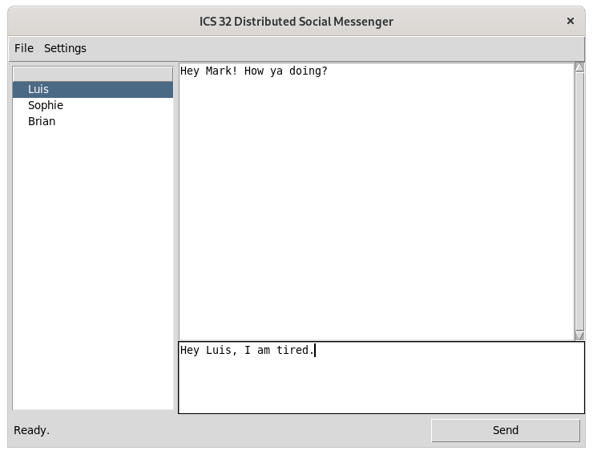

Final Project: Chatting with Friends¶
Overview¶
As discussed in the course overview, you will not be required to take a midterm or final exam. Rather, we will be assessing your understanding of the course material by asking you to apply what you have learned through a final project. At this point in the class you have learned how to work with the computer file system, modules, sockets, and APIs. You have also learned how to write simple tests for your code, classes, apply recursive function calls, and handle exceptions that occur when your program runs. Therefore, your final project should build upon and extend what you have learned so far and completed in your assignments.
The final project is worth a total of 200 points, more than what you earn for all course assignments, which means you should target an individual project workload that is equal to or greater than what you have completed for any two assignments in the course. You will have roughly five and a half weeks to complete your final project, so take this into account when planning your work. To help you manage the final project alongside your remaining three assignments, you will be allowed to work in groups. Working in a group is optional and will be limited to a maximum of three.
Note
If you choose to work in a group you must create a team name and nominate a leader. The leader will be responsible for communication and submission. We will discuss how to submit a group assignment in class as we near the end of the quarter. DO NOT wait until the last week of class to formalize your group. Take care of this step as soon as possible.
For your final project you will develop a module that enables a program to send and receive direct messages with another user on the DSP platform. You will then incorporate this module into a graphical user interface (GUI) using Tkinter. There is a significant amount of work required to make this program feature complete, so you should get started early and gradually build your program step by step. To help you get started, the requirements for your final program have been divided into several parts. You are encouraged to follow each part in order. If you are working in a group, assigning a single part to each group member is a good way to divide the work equitably as each part can be written and tested independently of the final program.
Part 1: Implement Direct Messaging Protocol¶
To communicate with another user on the DSP platform, your program will need to make use of new protocol messages. To support these new messages, your program should extend your ds_protocol module to support direct messaging with the following commands:
- directmessage
Accepts a message to be sent directly to another user.
# Send a directmessage to another DS user
{"token":"user_token", "directmessage": {"entry": "Hello World!","recipient":"ohhimark", "timestamp": "1603167689.3928561"}}
# Request unread message from the DS server
{"token":"user_token", "directmessage": "new"}
# Request all messages from the DS server
{"token":"user_token", "directmessage": "all"}
Recall from a3 that user_token is retrieved by sending a successful join command. So in order to send a direct message you must first join the server.
The DS server will respond to directmessage requests with the following ok response messages:
# Sending of direct message was successful
{"response": {"type": "ok", "message": "Direct message sent"}}
# Response to request for **`all`** and **`new`** messages. Timestamp is time in seconds
# of when the message was originally sent.
{"response": {"type": "ok", "messages": [{"message":"Hello User 1!", "from":"markb" "timestamp":"1603167689.3928561"},{"message":"Bzzzzz", "from":"thebeemoviescript" "timestamp":"1603167689.3928561"}]}}
To process these new response messages you will need to extend the message conversion code that you wrote for a3. How you solve this requirement is up to you, but a good approach will likely include adding a function to your ds_protocol that converts JSON messages to a list or dictionary.
Writing a Test¶
When your code is complete, write a small test program to verify that your messages are being processed as expected. Your program should import your module (e.g., import ds_protocol, if you are extending your ds_protocol module) and call the code you have written with a few test messages. You can use the messages provided above or create a few of your own as test cases. You can name your test whatever you like, but it should be prepended with the word test_:
test_ds_message_protocol.py
Once your test program is complete, you are ready to move on to the next part of the assignment.
Part 2: The DS Direct Messenger Module¶
Now that you have a functioning protocol in place, you are ready to write your message send and retrieve code. The first thing you will do is complete the direct messenger module. Your module must adhere to the following rules:
Must be named
ds_messenger.pyMust implement the following classes and methods
class DirectMessage:
def __init__(self):
self.recipient = None
self.message = None
self.timestamp = None
class DirectMessenger:
def __init__(self, dsuserver=None, username=None, password=None):
self.token = None
def send(self, message:str, recipient:str) -> bool:
# returns true if message successfully sent, false if send failed.
pass
def retrieve_new(self) -> list:
# returns a list of DirectMessage objects containing all new messages
pass
def retrieve_all(self) -> list:
# returns a list of DirectMessage objects containing all messages
pass
You are free to add as many supporting methods to either of these classes that you need, but the ds_messenger.py module should be able to function without any other dependencies. A program that imports your module should be able to call the required functions to exchange messages with the DS server. You may reuse or import the code you have written for the ds_client.py module to reduce the amount of code you have to write.
Writing a Test¶
Once again, when your code is complete, write a small test program to verify that your ds_messenger module is functioning properly. You can name your test whatever you like, but it should be prepended with the word test_:
test_ds_messenger.py
Once your test program is complete, you are ready to move on to the next part of the assignment.
Part 3: Store Messages Locally¶
Some of the data your program uses should be preserved across multiple uses. To complete this feature you can either implement your own data storage code or extend the Profile module to support serializing new data.
Your program should be able to store message data locally so that when the program starts it does not have to connect to the DSP server to display messages. Your program should also store recipient data locally so that your user does not have to add the same recipients each time the program is run. It’s fine if you require a user to first load their dsu profile (or custom file format you build) before displaying data. The important thing here is to NOT require an internet connection to get messages.
However you handle this requirement, after using your program once, all recipients added and messages retrieved should be appear in the GUI at start on subsequent uses.
Part 4: The Graphical User Interface¶
The final part of the assignment will be to write a graphical user interface (GUI) for your module using Tkinter. You are free to implement the interface however you like or adapt the Tkinter GUI starter code that you were given in assignment 5.
There are many ways to create a graphical interface for a direct messaging program. You are not required to follow the example below. However, if you are not sure where to start the following wireframe should point you in the right direction.

In the wireframe model presented above, there are 5 widgets that are responsible for all of the input and output in the program:
On the left is a treeview widget that displays all of the DS users that have sent you messages. Selecting a user will display the messages that they have sent in (2).
On the upper right is the display widget that contains the messages sent by the user selected in (1).
On the lower right is the text input widget where new messages are written.
The ‘Add User’ button is used to add new contacts to receive direct messages.
The ‘Send’ button sends the message entered in (3).
Tip
The layout used in this wireframe is nearly identical to the layout provided to you in assignment 5. You may reuse that existing code to save you some steps.

One possible version of the Social Messenger app is pictured above. In this version, the add user requirement has been moved to the settings menu. To see this version in action, watch the class recording for week 6.
In addition to the requirements described above, there are a few other tasks you must complete:
Your GUI must automatically retrieve new messages while the program is running.
Your conversations must be visually separated in some way (e.g., left/right align, color, identifier, etc).
Selecting a new contact in the treeview should display any recent messages with that contact in the message window.
Your GUI must include at least one “flourish.” A flourish is some feature that goes beyond the core requirements for a functional program. Past assignment flourishes have included a dark mode toggle, chat bubbles, profile switcher, and a profile wizard. This is your chance to have some fun with the project and make your final program unique. Feel free to ask us if your idea flourish will count for this requirement.
Final Submission¶
To receive full credit your final project must make informed use of the following criteria:
- Classes
You have been provided with some skeletal classes to use in your module. However, there will undoubtedly be other areas of the program where a class improves your program design. You must use at least one new class in addition to what has already been provided for you.
- Custom Exceptions
Your program should implement at least one custom exception class.
- Use of try/except
Areas of code prone to exceptions (sockets, file i/o, etc.) should be wrapped in try/except statements. Exceptions should be handled in a way that does not negatively affect the functionality of your program.
- Commenting and Documentation
Your overall final program should contain sufficient code comments for a new programmer to be able to understand what your code does. Your program should include an HTML document generated using PDOC that can be used to understand all of the code that you have written.
- Function
Your program must work. Functionality of your program will be assessed in two ways. First, a user should be able to run your program and send and receive direct messages with a DS server. Second, your
ds_messengermodule must work outside of your main program. We will use a validity checker program for grading that imports your module and makes calls on the required class and methods.
Note
Informed use means that you have thoughtfully applied the requirements in a way that is beneficial to your program. In other words, do not simply make up pointless tests or classes to check a box for the assignment.
You will submit all files required to run your project, your two test_ programs, PDOC files, and a README file that details any required instructions on how to build and run it. You must also include all references and sources that you used to build your project. If you included code in your project from an external source (e.g., StackOverflow, text books, sample programs, and so on), you must cite these sources in the readme as well as leave comments in your code files indicating where it was found by you or your group members.
Grading¶
Note
You will not be graded on the visual quality of your GUI. Getting TKinter to render perfectly on all platforms is difficult and we do not expect you to test across multiple platforms. So do your best to ensure that all of your UI elements can be accessed, but don’t worry too much about perfect rendering.
This assignment will be graded on a 200 point scale, with the 200 points being allocated completely to whether or not you submitted something that meets all of the above requirements. The following rubric will be used:
- Requirements (150 points)
Does the program fulfill the requirements described in each part of the assignment?
Does the program run without error?
Are there any bugs or errors?
- Validity (25 points)
Does the project adhere to the principles taught in class for creating robust and bug free code.
- Documentation (25 points)
Does the project provide sufficient documentation. Your code should be well commented so that we can understand what purpose it serves in your project. Your README should clearly explain how to run your project. And when run, the functionality of your project should be clear and intuitive. Your PDOC file should clearly articulate what each class, method, function does.
Your final submission should include all materials described in Parts 1-4, zipped and uploaded to the Canvas submission page by the due date. Since this is the last assignment for the course, there will be no late submissions accepted.